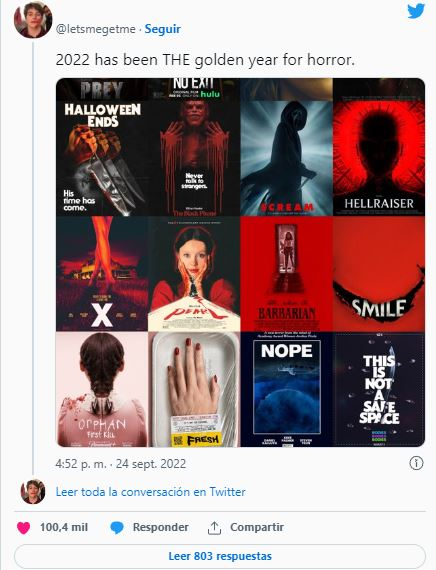
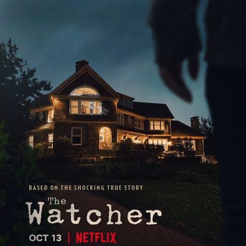

2022, el mejor año para el terror?:
2022 podría ser el año más estimulante para las películas de terror experimentado en mucho tiempo, no solo por la cantidad de piezas brillantes que darán conversación a la gente durante mucho tiempo, sino por la cantidad de títulos de éxito comercial acumulados. 2017 fue el año de mayor taquilla de la historia del terror. Las películas de miedo recaudaron casi 800 millones de dólares en venta de entradas en EE.UU, según el sitio web Box Office Mojo. El éxito arrollador de ‘It’ y ‘Déjame Salir’ (Get Out), con 175 millones abrió el camino.
El cine de terror ha alcanzado un récord de números uno en taquilla en 2022. Películas como ‘¡Nop!’, ‘Barbarian’, ‘Scream’, ‘The Invitation’ lo lograron, e incluso las recientes ‘Halloween: el final’ y ‘Smile’ no solo han tenido ocasión de subirse al podio, sino que lo han compartido simultáneamente en un mismo fin de semana. Algo insólito. Es cierto que ninguna ha conseguido más de 200 millones, pero en un escenario postpandemia, la cosa cambia.
Halloween llegó a Steam: los mejores juegos de terror, con descuentos increíbles:
La plataforma de Valve todos los días tiene ofertas espectaculares, pero cada vez que llega una fecha especial estos descuentos se multiplican, y alcanzan a varios de los mejores títulos de la historia. Ahora, con Halloween a la vuelta de la esquina, Steam lanzó el Festival del Miedo, una promoción imperdible en la que casi todos los juegos de terror se pueden conseguir a precios inexistentes. Desde grandes clásicos hasta lanzamientos recientes, cientos de títulos estarán en oferta hasta el próximo martes 1 de noviembre de 2022.
Para celebrar Halloween, la plataforma de PC lanzó una oferta imperdible con cientos de títulos con descuentos gigantes. Los más destacados son los siguientes:
- Resident Evil Halloween Pack (Incluye RE 2, RE 3, RE 7 y RE Village) - 68% de descuento
- Resident Evil 2 - 70% de descuento
- Resident Evil 3 - 70% de descuento
- Resident Evil 7 - 50% de descuento
- Days Gone - 60% de descuento
- State of Decay 2: Juggernaut Edition - 50% de descuento
- Silent Hill Homecoming - 90% de descuento
- Dead by Daylight - 60% de descuento
- Outlast - 85% de descuento
- Little Nightmares - 75% de descuento

Guardería del terror: maestras asustaban a niños con máscaras de Scream:
Cuatro trabajadoras de una guardería fueron acusadas de abuso infantil y despedidas después de que un video de ellas asustando a los niños con una máscara de 'Scream' se volviera viral.
Las cuatro mujeres trabajaban en Lil' Blessings Child Care & Learning Center en Hamilton, Mississippi. Una trabajadora se secó las lágrimas mientras se disculpaba por asustar a los niños pequeños con una máscara de Halloween después de que su comportamiento preocupante la dejara sin trabajo esta semana.
"Nos parece que estaban usando la máscara para modificar el comportamiento", dijo el alguacil del condado de Monroe, Kevin Crook, al Monroe Journal . "No pueden usar el castigo corporal, por lo que creemos que estaban usando la máscara para tratar de asustar a los niños para que hicieran lo que se suponía que debían hacer".
Según Crook, tres grupos de padres que enviaron a sus hijos a Lil' Blessings decidieron presentar cargos. Las cinco sospechosas fueron detenidas en la Cárcel del Condado de Monroe, declaró el Departamento del Sheriff.
Hablando después de que los videos preocupantes se volvieron virales en las redes sociales, una trabajadora de la guardería, que se refirió a sí misma como CeeCee, insistió en que el acto no fue "mal intencionado".
“No tenía la intención de dañar a nadie y no fue con malas intenciones”, dijo en un video compartido en Facebook, según el Daily Mail .
Prohibido vestirse como Dahmer en Halloween: eBay impide la venta de disfraces del famoso asesino de la serie de Netflix
'Dahmer- Monstruo: La historia de Jeffrey Dahmer' ya es una de las series del año. Una de las últimas miniseries de Ryan Murphy (junto a la igualmente exitosa 'Vigilante') ha triunfado en Netflix y justo a tiempo para Halloween. Eso sí, no ccuentes con comprártelo en eBay, donde está terminantemente prohibida la venta de disfraces del famoso asesino.
El disfraz de la llamativa caracterización de Evan Peters como Jeffrey Dahmer no podrá adquirirse a través de eBay, según ha declarado uno de sus portavoces. Dichos disfraces están prohibidos en la página, acogiéndose a su política de "violencia y criminales violentos":
"No se permiten las ventas que promueven o ensalzan la violencia o los actos violentos, o están asociados a individuos conocidos por cometer actos violentos."
Netflix: vuelve la serie de terror más vista y protagonizada por Naomi Watts:
"The Watcher" se convirtió en la serie de Netflix que destronó el éxito de "Monstruo: La historia de Jeffrey Dahmer", siendo el programa más visto de la plataforma. Ambas series son del mismo productor, Ryan Murphy, que demostró que no teme a contar historias sobre psicópatas ya que no para de superarse en los rankings.
Su estreno disparó al número 1 en las listas de la plataforma de streaming a tan solo una semana de lanzamiento, consiguiendo la cifra de 125.01 millones de horas vistas en la lista en inglés.
“Historias perturbadoras”: el youtuber mexicano Luisito Comunica publica su segundo libro:
El youtuber e influencer mexicano Luisito Comunica (Luis Arturo Villar Sudek) lanzó su segundo libro, en el cual se dedica a contar historias basadas en hechos reales bajo el título “Historias Perturbadoras”. Este lanzamiento llega tan solo tres años después de “Lugares Asombrosos: Travesías insólitas y otras maneras extrañas de conocer al mundo”.
En la reciente publicación, el también escritor desarrolla tres historias en las que explora temas como la migración, la violencia intrafamiliar, algunas leyendas y otras historias que ha escuchado y vivido.
De acuerdo con Villar Sudek, el libro está diseñado de una forma dinámica en la que se puede indagar en conversaciones de WhatsApp, correos electrónicos y hasta ilustraciones a página completa para darle un toque perturbador.